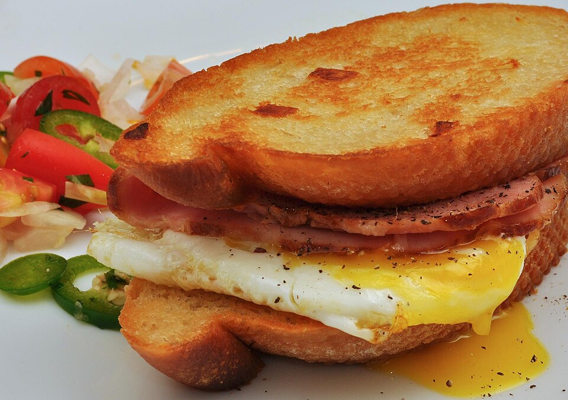

Pasture-Raised Eggs & Meats
Every egg cracked in our kitchen comes from pasture-raised hens, and our bacon and sausage are cured without synthetic nitrates, delivering pure, rich flavor.
Stable Hand redefines daytime cafe dining by treating our kitchen with the same seriousness as an evening bistro. We bake, roast, brine, and pickle from scratch using pasture-raised Carolina eggs, heritage pork, and local bakery loaves. As the sun dips lower, our curated natural wine list offers living, unfiltered sips from dedicated biodynamic vignerons.

Commitment to regenerative farming, zero shortcuts, and low-intervention fermentation.
Every egg cracked in our kitchen comes from pasture-raised hens, and our bacon and sausage are cured without synthetic nitrates, delivering pure, rich flavor.
We champion regional agricultural heritage by cooking with heirloom Carolina Gold broken rice for our savory breakfast bowls and pairing dishes with local artisanal sourdough.
Our wine program strictly features minimal-intervention winemakers using organic farming, native yeast fermentations, and zero additives for expressive, alive wines.